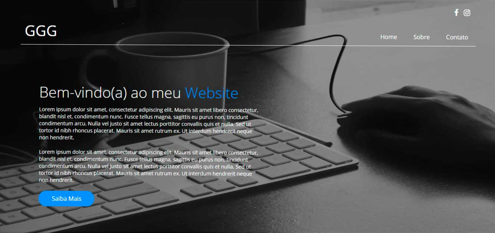
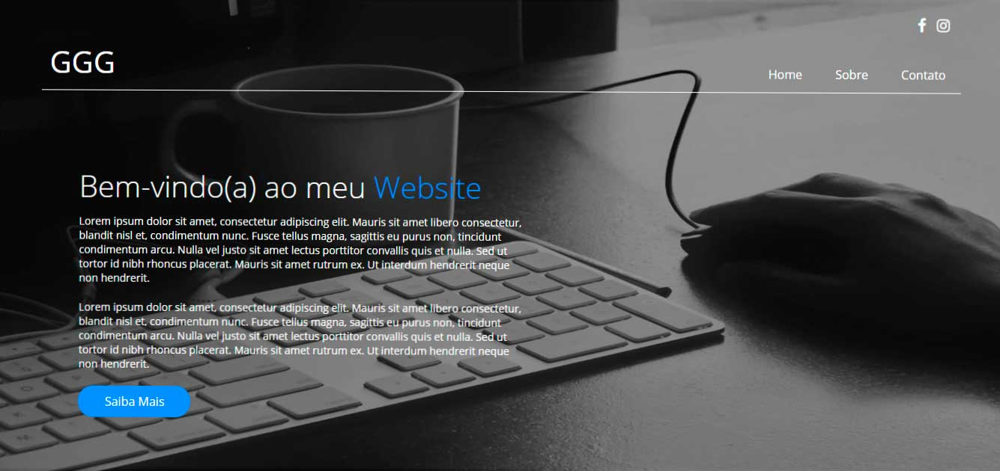
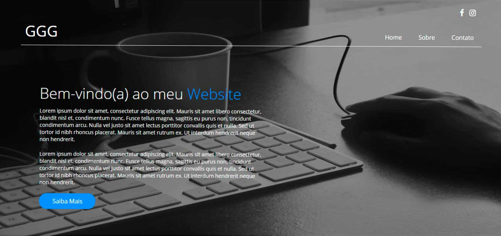

Portfólio
Últimos trabalhos. Veja mais ❯
 

Olá, eu sou o Guilherme Guimarães Galli, mais conhecido como "triplo G" ou "GGG" rs. Tenho 22 anos, moro em São Paulo capital e sou Bacharel em Ciência da Computação na Universidade Paulista.
Sou apaixonado por tecnologia, sempre conectado às novas tendências e inovações, buscando um constante aprendizado e aprimorando minhas técnicas e habilidades. Meu sonho é me tornar um desenvolvedor web full-stack.
Atualmente sou estudante de desenvolvimento Web front-end e estou a procura de oportunidades na área onde eu possa adquirir o máximo de experiência e por em prática meus conhecimentos.
HTML5 & CSS3
JAVASCRIPT
JQUERY
SQL SERVER
PHOTOSHOP
PACOTE OFFICE
INGLÊS
Últimos trabalhos. Veja mais ❯

Nesse período realizei o ensino técnico de informática com duração de 1 ano e 6 meses.
Em 2013 iniciei minha jornada pelo diploma de Bacharel no curso de Ciência da Computação.
Nesse período fui estagiário na Fundação para o Desenvolvimento da Educação onde realizava o suporte N1 e N2 aos usuários internos.
Curso de desenvolvimento front-end na escola Senai, em parceria com a Fundação JPMorgan com duração de 6 meses.
Obrigado por visitar meu site, espero que tenha se identificado com meu trabalho e que possamos trabalhar em um novo projeto. Entre em contato caso haja interesse, estou a total disposição.
guilhermegalli5@hotmail.com Tel: (11) 94586-5050